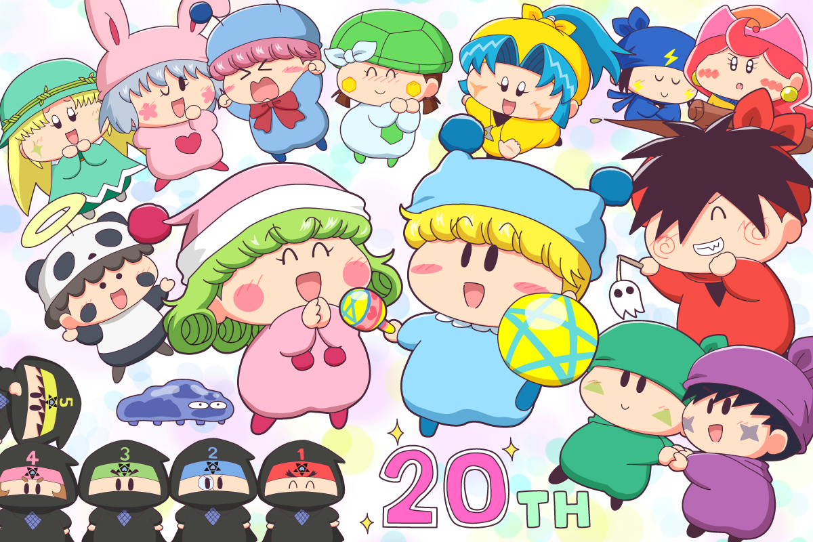
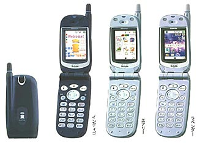
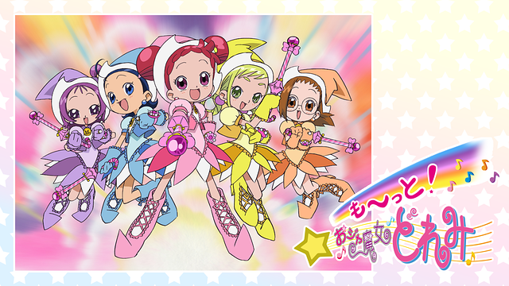

2021年はミルモでポン！が連載開始してちょうど20周年という、記念すべき年だったりします！(^^)
原作漫画は、2001年2月3日発売の『ちゃお』（2001年3月号）に読み切り版が掲載され、同年8月3日発売の2001年9月号から連載が開始（Wikipediaから引用）。連載開始の半年後にアニメ化したことをみると、連載開始直後から当時の注目度はとても高かったことがわかりますよね（ちなみに私は2003年になってからミルモにハマったので、ミルモ歴はまだ18年です）
さて、ミルモ20周年なのに何もしないわけもいかない！と思い、ミルモ20周年をお祝いする絵を描きました。結構前からちまちまと描いていましたが、忙しくて気がつけば5月に・・。遅くなってしまいごめんなさいm(_ _)m

絵の主役はもちろんミルリルで。とかいいつつ、私の趣味でちびっこ妖精の割合が多めです(^◇^;)。ムルパピを描くとアロマちゃんやカメリちゃんもセットで描きたくなったり。ホントはペータやマンボといったミルモフレンズも描きたかったけれど、スペースと気力の都合で断念💦
妖精という存在がミルモの魅力を語る上で欠かせないですよね。もちろん楓ちゃんたちのにぎやかな学校生活や、妖精忍者の絆、弟ムルモの腹黒さなど、いろんな要素があるからこそのミルモ人気なのだと思います。いろんな妖精をお絵描きしている最中も、原作やアニメであんな話やこんな話もあったよなぁといろいろ思い出してたりしました。皆さんのお気に入りもぜひ聞いてみたいなぁ。
ミルモ20周年Yearは5ヶ月を過ぎたばかり。ムルモ屋本舗でも、この絵で終わりではなく、もっといろんな形で盛り上げていきますので、今後ともよろしくお願いいたします！
おまけとして、ミルモがスタートした2001年がどんな年だったのかを振り返ってみようと思います。
2001年といえば21世紀。2000以前は21世紀は未来のイメージがありましたが、21世紀になってもそれほど変化はないような・・いや気づかないだけでいろいろな部分が便利になっていますね。3月には大阪にUSJ（ユニバーサルスタジオジャパン）が開園したり、また9月にはアメリカ同時多発テロ事件という悲しい事件もありました。
携帯電話だと、2001年3月に3GのFOMAサービス（ドコモ）がスタート。その数年前からも携帯電話でメールが使えるようになってはいましたが、インターネットとの融合が進んだ3Gからさらに便利になった気がします。その後は4Gの今があり、そして今は5Gの普及が始まっていますね。

画像はITMedia Mobileの記事から引用
インターネットの世界だと、当時は掲示板でのコミュニケーションが主流でした。2005年頃からMixiやアメブロのようなブログがブームになり、2010年頃からTwitterのようなSNSがメインで使われるようになりました。今も掲示板が残るムルモ屋本舗はもはや天然記念物と呼べるのかも(^◇^;)
2001年に放送されていたアニメを調べてみると、「カスミン」「ジャングルはいつもハレのちグゥ」「Dr.リンにきいてみて!」「ヒカルの碁」「も～っと!おジャ魔女どれみ」など懐かしいタイトルばかり！ でもそんなに古さは感じない気もする・・

画像はdアニメストアから引用
これからもムルモ屋本舗はミルモを応援し続けます。30周年を迎えるまでにミルモ界隈で再アニメ化などのいろんな変化がありますように。
(2021/5/9)